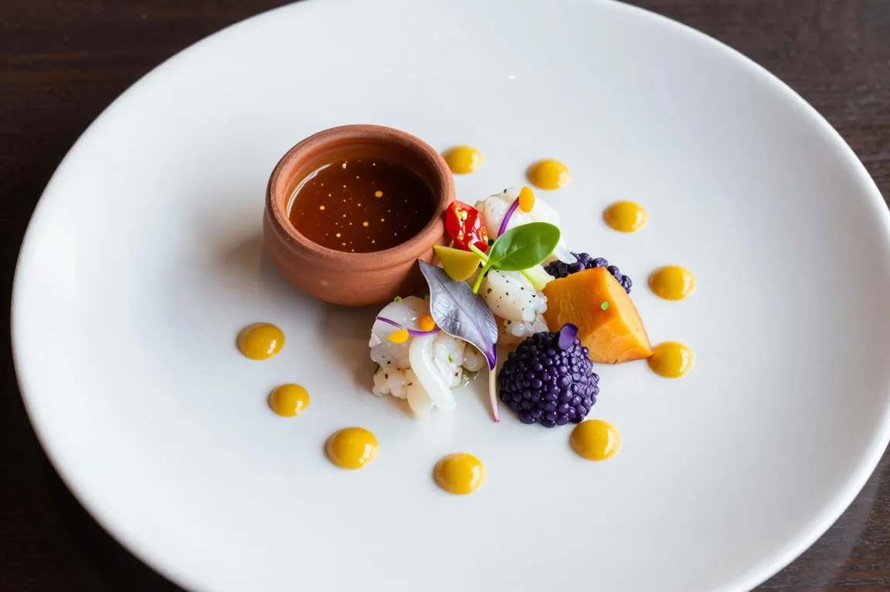

Et kjøkken i Lima som tar potetene, kornet og chilien fra Andes og fisken fra Stillehavet, og gir dem fransk og japansk teknikk. Gastón Acurio, Virgilio Martínez og Mitsuharu Tsumura gjorde det til et verdenskjøkken.

Kjerneidé
Peru rommer havet, ørkenen, fjellet og jungelen, og kokkene i Lima setter dem sammen med japanske kniver og franske sauser til ett nytt nasjonalt kjøkken.
Designprinsipper
Start fra den innfødte ingrediensen: potet, mais, quinoa, chili og fisken fra det kalde havet.
Syrebehandle rå fisk i noen minutter i limesaft, og server den straks med saften.
Sett den japanske skjæringen og den peruanske chilien sammen: en tynn skive fisk med soya, lime og aji.
Bruk mange chilityper for frukt og farge like mye som for styrke.
Før råvarer fra høydene inn i menyen, fra havet til de høye Andes.
Gi kokken og bonden en del av æren, og hjelp den lille produsenten.
Hold tallerkenen lys, med sure, sterke, søte og salte smaker i én munnfull.
Antimønstre
Fisk som syrebehandles i timevis til den er tørr
En tung fløtesaus på en ceviche
En rett uten chili eller syre
En kopi av en europeisk meny med et peruansk navn
Importerte ingredienser når en innfødt er i sesong